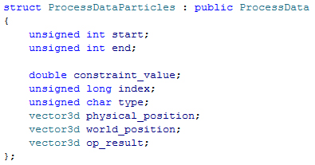

ProcessDataParticles

This struct contains additional information for operations on particle based nodes (particle groups).
Usually it is filled by Effex and passed to the processing functions of custom plugin nodes.
The values should never be altered if not explicitly stated.
unsigned int start
The starting particle index in a multiprocessor context.
unsigned int end
The ending particle index in a multiprocessor context.
double const
If the operating node that has filled this struct uses constraints, then this value gives you the final constraint value.
unsigned long index
The currently processed particle index.
unsigned char type
The type of the current particle. See ParticleFactoryTypes.
vector3d physical_position
The currently processed particle position in physical space.
vector3d world_position
The currently processed particle position in world space.
vector3d op_result
A result variable that can be changed. Currently only used by custom force plugins.